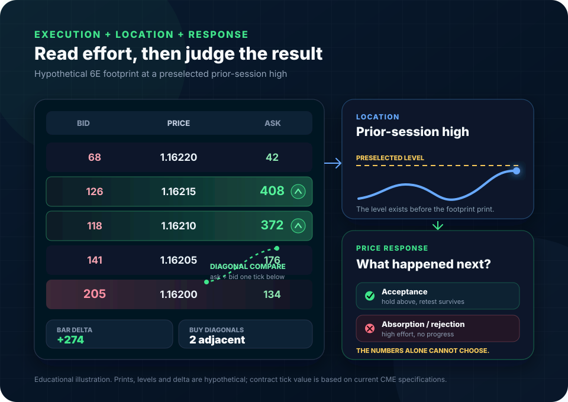

6E execution and auction guide
How to Read Order Flow on 6E: Footprints, Imbalances and Delta
A footprint tells you where aggressive orders executed. It does not tell you why they traded, how much liquidity was hidden or cancelled, or what price must do next. The useful read comes from combining execution, location, price response, and follow-through.

The governing rule
Read Aggression, Then Judge the Result
Every trade has a buyer and a seller. Footprint language labels the side that crossed the spread: a market buy lifts the offer and is usually counted as ask volume; a market sell hits the bid and is usually counted as bid volume. That classification measures aggression, not which side is smarter.
At a preselected level, ask three questions in order: Who crossed the spread? Did price make proportional progress? Did the market accept or reject the new prices afterward? An imbalance without location is a colored number. Delta without price response is incomplete evidence.
Precise definitions
The Vocabulary Behind a 6E Footprint
Use these terms literally. Loose definitions make different chart settings look like the same signal when they are not.
Trades classified at the bid
Usually interpreted as aggressive selling because the seller accepted the best displayed bid. It is executed volume, not the number of passive buy orders waiting there.
Trades classified at the ask
Usually interpreted as aggressive buying because the buyer accepted the best displayed offer. It does not reveal the buyer's holding period or motive.
Ask volume minus bid volume
Delta can be calculated at one price, across a bar, or cumulatively across a session. The selected scope must be stated before interpreting the number.
A configured volume comparison
Platforms highlight a ratio or difference that exceeds a threshold. Same-price and diagonal comparisons are different calculations.
High effort, limited price progress
Repeated aggressive volume trades into passive liquidity, but price cannot continue through the area. Confirmation requires rejection or failure to advance.
Declining participation at an extreme
Volume or aggression contracts as price extends. Low volume alone is not enough; it must be read against auction location and the subsequent response.
Inside one bar
How to Read a Footprint Without Reversing the Math
A common bid-by-ask display prints bid-classified volume on the left and ask-classified volume on the right at each price. Confirm the layout in your platform before interpreting colors.
Ask at price versus bid at the same price
This identifies dominance within a row. It is not the same calculation as the diagonal comparison commonly used for imbalance highlighting.
Ask at price ÷ bid one tick below
For example, 408 ask at 1.16215 compared with 118 bid at 1.16210 is about 346%. Whether it is colored depends on the platform threshold and minimum-volume rules.
Bid at price ÷ ask one tick above
This mirrors the buy-side calculation. Always document the exact comparison, threshold, treatment of zeros, and volume filter used in the chart.
Interactive teaching tool
Footprint Ratio and Delta Decoder
Enter one diagonal comparison and the total bid/ask volume for its bar. The tool performs the math only. It does not identify location, absorption, acceptance, or a trade.
What the print says—and does not say
- Diagonal ratio
- 350.0%
- Threshold test
- Met
- Bar delta
- +810
- Delta percentage
- +14.2%
The selected buy-side ratio meets the configured threshold. That describes aggressive execution at this comparison; it does not prove support, continuation, or a long trade.
Read delta as a relationship
Delta Measures Aggression, Not Guaranteed Direction
Positive delta means more volume was classified at the ask; negative delta means more was classified at the bid. The next question is whether that aggression produced and retained price movement.
Aggression and progress align
This is consistent with buyers lifting offers and price auctioning higher. Continuation still requires acceptance above the relevant level.
Possible sell-side absorption
Aggressive buyers are active but cannot make proportional progress. Rejection, a failed retest, or rotation lower is needed before calling it absorption.
Aggression and progress align
This is consistent with sellers hitting bids while price auctions lower. A low close alone does not guarantee another lower bar.
Possible buy-side absorption
Aggressive sellers trade into passive buying without breaking the area. The defense matters only if it survives subsequent testing.
Cumulative delta
Useful for sequence, dangerous as a standalone divergence
Cumulative delta adds bar delta across a chosen session. A divergence can reveal that aggressive effort is not translating into price progress, but it is sensitive to the reset time and does not include every venue in the global EUR/USD market. Standard 6E and spot EUR/USD are related markets, not the same order book. Use the companion 6E versus EUR/USD guide before comparing their flow.
Pattern logic
Absorption, Exhaustion and Stacked Imbalances
These are descriptions of auction behavior, not named candles. Each needs location and confirmation.
Large aggression, small result
- Occurs at a level that matters before the print appears.
- Repeated aggressive volume fails to extend price.
- The bar closes away from the extreme or the next test fails.
- Invalidated if price accepts through the defended area.
Diminishing participation at an extreme
- The auction extends into a preselected target or thin area.
- Volume and aggressive prints contract near the edge.
- Price cannot attract enough new participation to continue.
- Invalidated when new volume enters and price accepts beyond the edge.
Several adjacent thresholds are met
- Shows concentrated aggression across multiple prices.
- Can accompany a breakout, climax, or trapped late entry.
- Becomes more useful when price holds beyond the stack.
- Is not automatic support or resistance after the fact.
Worked 6E examples
The Same Imbalance Can Mean Four Different Things
All figures below are hypothetical and use a 300% diagonal threshold. The difference is the surrounding auction, not the color of the cell.
| Context | Footprint evidence | Price response | Defensible read |
|---|---|---|---|
| Break above prior session high | Three adjacent buy diagonals from 315% to 430%; bar delta +1,140 | Closes near the high; retest trades lower volume and holds above the old high | Buy aggression gained acceptance. The retest, not the first green cell, supplies confirmation. |
| Test of weekly resistance | Ask volume repeatedly exceeds 500 contracts; delta +1,620 | Price advances one tick, closes back inside value, then fails on retest | Possible sell-side absorption: high buying effort produced little result and was rejected. |
| CPI release spike | Extreme prints and stacked imbalances on both sides across seconds | Price crosses the level repeatedly; fills and spreads are unstable | No clean directional inference. Event liquidity and rapid repricing overwhelm a static footprint snapshot. |
| Late breakout from a narrow range | One 360% buy diagonal at the high; total bar volume below recent breakout bars | Next bar returns below the range boundary and cannot reclaim it | The isolated imbalance did not earn acceptance; late aggressive buyers may be trapped. |
Scheduled releases can compress several auction phases into seconds. Review the CPI, NFP, FOMC and ECB guide for 6E before treating a news footprint like an ordinary session bar.
Data before interpretation
A Footprint Is Only as Trustworthy as Its Feed and Settings
If two platforms disagree, inspect the inputs before debating the pattern. A footprint is a calculation built from a specific stream of trades.
Confirm bid/ask classification
Prefer exchange-provided aggressor information when the feed supports it. Otherwise the platform may infer trade side from price and quote updates.
Store one-tick intraday data
Aggregated historical records can lose the sequence required for accurate volume-at-price and bid/ask reconstruction.
Match the session template
Bar delta and cumulative delta change when the session starts, pauses, or resets. State the time zone and reset point.
Document bar construction
Time, range, reversal, volume, and event-based bars group the same trade stream differently. Patterns are not portable without the construction rule.
Audit reconnect gaps
A chart can look complete while missing trade records after a disconnect. Reload historical data and compare suspicious bars before analysis.
Keep markets separate
6E futures volume is not aggregate global spot-FX volume. A spot feed, futures feed, and dealer venue can show different activity.
For Sierra Chart configuration and the data requirements behind Numbers Bars, use the complete Sierra Chart Numbers Bars guide.
A repeatable workflow
The Context-First 6E Reading Sequence
The sequence prevents a bright footprint cell from becoming a post-hoc reason for a trade.
- 01
Name the contract, session and event risk
Record the active 6E expiry, chart time zone, session template, and scheduled US or euro-area releases. Check 6E session behavior rather than comparing every hour to the same volume baseline.
- 02
Preselect the auction location
Mark prior highs and lows, value boundaries, a tested breakout level, or a macro reference before reading the footprint. Middle-of-range prints deserve less weight.
- 03
Read the aggressive side
Note bid/ask volume, diagonal ratios, stacked imbalances, and bar delta using documented settings. Compare with recent bars from the same session segment.
- 04
Measure price progress
Ask how far price moved for the amount of aggression. A large delta with a one-tick advance is different from the same delta through a clean range expansion.
- 05
Demand acceptance or rejection
Use the close, next bar, retest, and time spent beyond the level. Confirmation can fail; define what invalidates the interpretation.
- 06
Place the valid stop before sizing
The stop belongs beyond the structure that disproves the trade, not beside a colored cell. Convert the stop to dollars with the real drawdown-buffer sizing framework. If one contract does not fit, skip the trade.
- 07
Save the evidence
Capture the footprint, settings, level, entry logic, invalidation, and subsequent path. Review whether the pattern added information beyond location and price alone.
Common sizing and reading failures
Order-Flow Mistakes That Manufacture Certainty
A market buy and passive sell occur together. Control is inferred from price response, not from one side of the classification.
A footprint does not reveal every displayed, cancelled, refreshed, or hidden limit order.
A ratio that is rare in one session or bar type can be routine in another. Test thresholds against the exact feed and construction.
A 400% ratio can be 4 versus 1. The percentage is large while the participation is trivial.
Cumulative delta changes when the session start changes. A divergence without a defined window is not reproducible.
Rapid repricing, spread changes, and data bursts can create extreme cells on both sides before a stable auction forms.
Order flow can refine timing; it cannot make an invalid stop technically correct.
“Institutions absorbed it” is not evidence unless the level, effort, result, and confirmation were defined before the outcome.
Final decision checklist
Before an Order-Flow Read Becomes a Trade
If any input is unknown, the interpretation remains incomplete.
Data: Feed, trade classification, tick storage, and reconnect history are trustworthy.
Settings: Bar type, session reset, diagonal method, threshold, and minimum-volume filter are documented.
Location: The level mattered before the footprint print appeared.
Effort: I can state who crossed the spread and by how much.
Result: I compared aggressive volume with price progress, close, and follow-through.
Invalidation: The stop is beyond the structure that disproves the idea and fits the dollar-risk budget.
Frequently asked questions
6E Order-Flow Questions
What does a footprint chart show in 6E?
A footprint chart distributes executed volume across the price levels inside each bar, commonly separating volume classified at the bid from volume classified at the ask. It is a record of trades, not a complete record of resting orders or trader intent.
What is delta on a 6E footprint chart?
Delta is ask-classified volume minus bid-classified volume for the selected price, bar, or session. Positive delta means more volume was classified at the ask; negative delta means more was classified at the bid. Delta does not prove that price must move in the same direction.
How is a diagonal bid-ask imbalance calculated?
A common diagonal method compares ask volume at one price with bid volume one tick below for a buy-side comparison, or bid volume at one price with ask volume one tick above for a sell-side comparison. The platform's threshold and zero-volume rules determine whether it is highlighted.
Does positive delta mean 6E will rise?
No. Positive delta records aggressive buying, but price can fail to rise when passive sellers absorb that buying. Location, price progress, the close, and subsequent acceptance or rejection are required context.
Do footprint charts require market-depth data?
Not necessarily. Footprints are built from executed trades classified at bid or ask. Sierra Chart states that its Numbers Bars do not require market-depth data, but accurate intraday bid-ask volume still depends on the data feed, classification method, and sufficiently granular stored data.
What is the tick value of standard 6E futures?
CME lists the standard Euro FX futures contract at 125,000 euros with an outright minimum price increment of 0.00005 US dollars per euro. That increment is worth $6.25 per contract.
Sources and methodology
Official and Primary Sources
- CME Group: Euro FX futures contract specifications and CME FX Product Guide for contract size, quote convention, tick increment, and central-limit-order-book context.
- Sierra Chart: Numbers Bars documentation for bid/ask volume definitions, diagonal comparisons, configuration choices, and one-tick intraday data guidance.
- Sierra Chart: Numbers Bars accuracy and data considerations for feed, storage, and historical-data limitations.
- National Futures Association: Investor Best Practices for leverage and risk-capital disclosure.
Contract and documentation pages were checked August 5, 2026. Worked prints are explicitly hypothetical. The interactive decoder exposes its formulas and applies no predictive model.